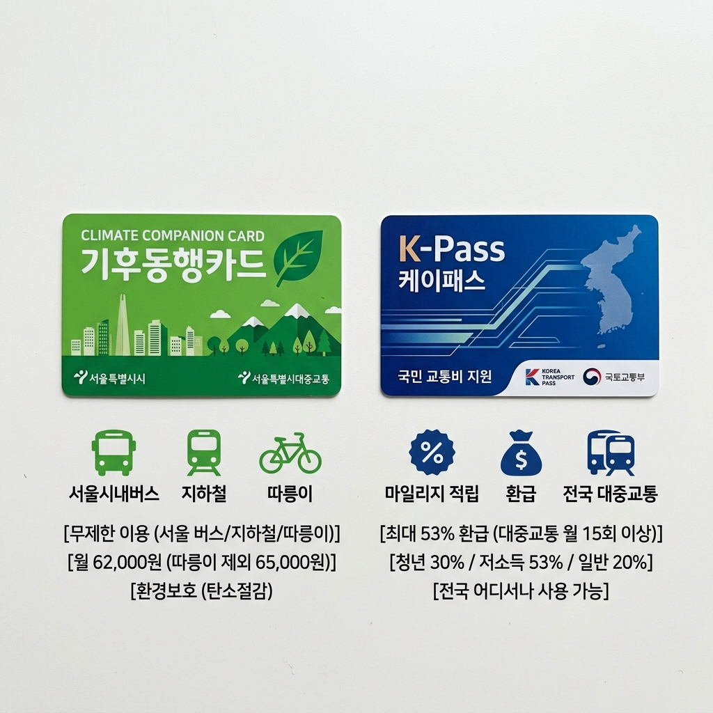
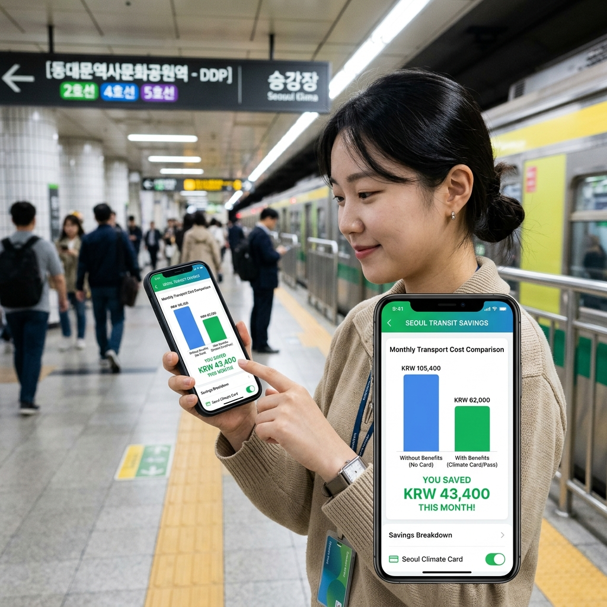

매달 빠져나가는 교통비를 줄이기 위해 K-패스와 기후동행카드를 비교해 보신 분이 많을 겁니다.
두 카드 모두 대중교통 비용을 낮춰 주는 제도이지만, 동작 방식이 달라서 생활권에 따라 유리한 카드가 다릅니다.
이 글은 두 카드의 핵심 구조와 비용을 비교하고, 어떤 상황에서 어느 카드가 더 이득인지 정리한 내용입니다.
⚠ 안내: 교통비 지원 정책은 지자체 예산과 정책 방향에 따라 변경될 수 있습니다. 가입 전 공식 채널에서 최신 조건을 확인하세요.
두 카드는 구조부터 다릅니다.
기후동행카드는 월정액 선불 무제한 방식입니다. 한 달에 62,000원(기본형)을 충전하면 그 달 서울 시내 지하철·시내버스·마을버스를 무제한 이용할 수 있습니다. 신분당선과 GTX는 이용 불가합니다.
K-패스(모두의 카드)는 후불 환급 방식입니다. 매달 15회 이상 대중교통을 이용하면 이용 금액의 일정 비율을 다음 달에 돌려받는 구조입니다. 일반 20%, 청년(19~34세) 30%, 저소득층 53%를 환급합니다.
기후동행카드는 서울에서만 사는 분에게, K-패스는 서울·경기·인천을 넘나드는 분에게 구조적으로 유리합니다. 단, 실제 이득은 월 이용 횟수와 이동 패턴에 따라 크게 달라집니다.
K-패스는 교통카드 종류에 따라 월 한도가 다릅니다.
2026년 기준 모두의 카드 일반형(62,000원/월)과 플러스형(100,000원/월)이 대표적입니다. 여기서 설정한 한도 내에서 사용된 금액에 환급률이 적용됩니다.
예를 들어, 일반형(62,000원)을 사용하고 일반 환급률 20%를 받으면 월 최대 12,400원을 돌려받을 수 있습니다. 청년이라면 30% 환급으로 최대 18,600원을 받을 수 있습니다.
K-패스는 수도권 어디서나 사용 가능하며, 신분당선도 이용 가능합니다.
※ 카드 상품 구성과 환급 한도는 변경될 수 있으니 K-패스 공식 홈페이지에서 가입 전 확인하세요.
기후동행카드는 서울 안에서만 이동하는 분에게 가장 확실한 혜택을 줍니다.
하루에 지하철을 3번 이상 타는 날이 많다면, 월 62,000원을 훌쩍 넘는 교통비를 정액으로 고정시킬 수 있습니다.
출퇴근 외에도 주말 나들이로 서울 시내 이동이 많다면 버스·지하철 환승 횟수에 관계없이 정액이므로 마음껏 이용할 수 있습니다.
반면 경기나 인천으로 자주 이동하거나, 신분당선·GTX를 자주 이용하는 분에게는 기후동행카드의 효용이 크지 않습니다.
선불 충전 방식이므로 연속 여행이나 장기 미사용 기간이 있으면 잔액이 낭비될 수 있다는 점도 감안해야 합니다.

K-패스는 서울·경기·인천 경계를 넘는 이동이 잦은 분과 청년·저소득층에게 특히 유리합니다.
경기도 거주자가 서울 지하철을 타는 경우에도 K-패스 환급이 적용되므로, 기후동행카드의 서울 한정 구조를 벗어날 수 있습니다.
청년(19~34세)은 30% 환급을 받기 때문에, 같은 교통비를 쓰더라도 일반 성인보다 더 많은 금액을 돌려받습니다.
대중교통 이용이 월 15회에 못 미치는 달(여행, 재택근무 등)에는 환급 자격이 사라지므로, 이용 패턴이 불규칙한 달이 많다면 기후동행카드의 정액 방식이 오히려 예측 가능성이 높다는 점도 비교 포인트입니다.
자신의 생활권에 맞는 카드를 고르는 데 다음 기준을 활용해 보세요.
| 생활 패턴 | 추천 카드 |
|---|---|
| 서울 내 출퇴근, 주말 외출 많음 | 기후동행카드 |
| 경기·인천 ↔ 서울 출퇴근 | K-패스 |
| 청년(19~34세), 수도권 이동 | K-패스 청년 |
| 저소득층 | K-패스 저소득(53%환급) |
| 신분당선·GTX 이용 많음 | K-패스 |
기후동행카드와 K-패스는 별개의 카드 상품이므로 중복 소지는 가능합니다.
그러나 동시에 모든 혜택을 이중으로 누리기는 어렵습니다. 기후동행카드는 충전 방식, K-패스는 해당 카드로 결제해야 환급이 발생하는 구조입니다.
일부 사용자들이 서울 안에서는 기후동행카드를, 서울 외 이동 시에는 K-패스로 결제하는 방식을 활용하기도 합니다만, 두 카드의 충전·결제를 나눠서 관리하는 번거로움이 생깁니다.
자신의 이동 패턴에서 어느 쪽이 더 큰 비중을 차지하는지 판단하고 주력 카드를 하나로 정하는 것이 관리 측면에서 효율적입니다.
기후동행카드는 서울시 공식 채널을 통해 발급합니다.
모바일 카드(티머니GO 앱 기반)로 즉시 발급하거나, 역사 내 자동발매기에서 실물 카드를 구매하는 방법이 있습니다.
충전은 앱 내 결제 또는 편의점·역사 내 충전기를 통해 할 수 있습니다. 기본 62,000원을 충전하면 충전일로부터 30일간 사용이 가능합니다.
사용 가능 교통수단 목록, 기간 연장 방법 등 세부 사항은 서울시 공식 기후동행카드 안내 페이지를 통해 확인하세요.

K-패스는 참여 카드사(신한·국민·하나·현대·BC 등)에서 카드를 발급받고, K-패스 앱 또는 홈페이지에서 카드를 등록하면 됩니다.
등록 후 매달 15회 이상 대중교통을 이용하면 익월 환급이 이루어집니다. 환급 방식은 카드사에 따라 청구 할인(선환급) 또는 포인트 지급 형태가 다를 수 있으니 발급 시 확인하세요.
청년·저소득 우대 혜택을 받으려면 나이 또는 소득 요건을 앱/홈페이지에서 인증해야 합니다. 인증 절차는 K-패스 공식 사이트(kpass.go.kr)에서 확인하세요.
※ 카드 출시 및 환급 정책은 변경될 수 있습니다. 가입 전 반드시 공식 사이트에서 현재 조건을 확인하세요.
다음 체크 항목을 따라 자신에게 맞는 카드를 찾아 보세요.
① 주요 이동 범위: 서울 안에서만 이동하나요? → 기후동행카드 우선 검토.
② 경계 이동 빈도: 수도권(경기·인천) 교차 이동이 많나요? → K-패스 우선 검토.
③ 연령대: 19~34세 청년인가요? → K-패스 청년 환급(30%) 유리.
④ 월 이용 횟수: 한 달에 15회 이상 대중교통을 이용하나요? → K-패스 환급 조건 충족.
⑤ 신분당선·GTX 이용: 자주 이용하나요? → 기후동행카드는 미지원, K-패스 선택.
두 조건이 비슷하다면 한 달 직접 사용 후 실제 교통비를 비교해 보는 것이 가장 정확합니다.
기후동행카드: 서울 전용 월정액(62,000원), 무제한 버스·지하철, 신분당선·GTX 제외.
K-패스(모두의 카드): 수도권 전체, 15회 이상 이용 시 환급(일반 20%, 청년 30%, 저소득 53%), 신분당선 포함.
최종 판단은 내 생활권과 이용 패턴 기준으로 직접 계산해 보는 것이 가장 정확합니다.
정책은 수시로 바뀔 수 있으니 가입 전 각 공식 사이트(기후동행카드: 서울시, K-패스: kpass.go.kr)를 반드시 확인하세요.